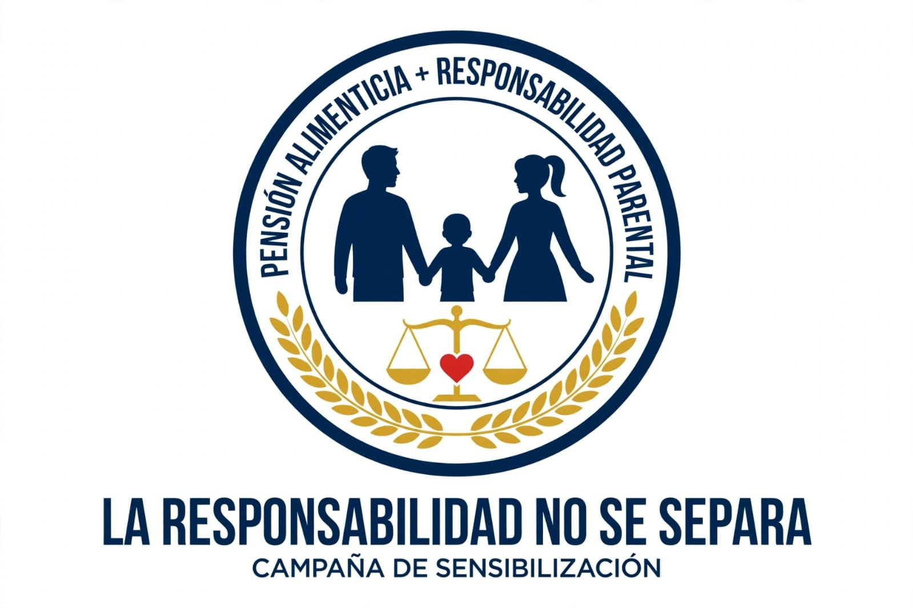

🍎
Alimentación
Contribuye a cubrir la comida y las necesidades nutricionales.
Conoce la importancia de las obligaciones familiares y la protección de los derechos de los niños, niñas y adolescentes.
Explorar el tema Ver presentación
Es una contribución destinada a cubrir las necesidades de la persona que tiene derecho a recibir alimentos y otros gastos esenciales, según las normas aplicables y las circunstancias del caso.
Contribuye a cubrir la comida y las necesidades nutricionales.
Puede incluir gastos relacionados con el alojamiento, la ropa y otras necesidades básicas, según corresponda.
Ayuda a atender gastos de formación, atención médica y bienestar.
Las responsabilidades parentales comprenden el cuidado, la orientación, la protección y el acompañamiento de los hijos, considerando su bienestar y desarrollo integral.
Procurar un entorno seguro y atender las necesidades cotidianas de los hijos.
Acompañar el aprendizaje, fomentar valores y apoyar el desarrollo de habilidades.
Brindar respeto, atención, afecto y apoyo apropiado para su desarrollo.
Los derechos de la niñez deben ser respetados y protegidos. Las decisiones que les afecten deben considerar su interés superior de acuerdo con las normas aplicables.
Acceso a cuidados y condiciones que favorezcan su bienestar.
Oportunidades para aprender, desarrollarse y participar.
Protección frente a la violencia, el abandono y otras situaciones perjudiciales.
Respeto a su identidad y a los derechos reconocidos por la legislación.
Condiciones de vida que favorezcan su seguridad y desarrollo.
Apoyo para su desarrollo físico, intelectual, emocional y social.
La pensión alimenticia y la protección de la niñez se relacionan con normas sobre obligaciones familiares, derechos de los menores y procedimientos judiciales.
Verifica las leyes, sus reformas y los procedimientos en portales institucionales antes de incluir números de artículos o requisitos específicos.
El procedimiento y los requisitos pueden variar según las circunstancias. Consulta a la autoridad competente para obtener instrucciones actualizadas para tu caso.
Consulta a la autoridad o institución competente para conocer el procedimiento aplicable.
Pregunta qué documentos y datos son necesarios para presentar la solicitud.
Sigue las indicaciones oficiales y los pasos que correspondan a tu situación.
Infórmate sobre las citaciones, decisiones y mecanismos oficiales de seguimiento.
El cumplimiento de las obligaciones familiares contribuye a atender las necesidades de los hijos. Las consecuencias legales de un incumplimiento dependen de la legislación vigente y de las circunstancias del caso.
Porque ayuda a cubrir necesidades esenciales y promueve la corresponsabilidad en el cuidado y desarrollo de los hijos.
Solicita información en una institución competente o busca orientación legal para conocer las opciones disponibles.
Agrega tus propias imágenes guardándolas en la carpeta imagenes. Después, descomenta la etiqueta <img> y cambia el nombre del archivo por el tuyo.


Graba o edita tus videos y guárdalos dentro de la carpeta videos. Luego cambia el nombre del archivo en la etiqueta <source>.
Reemplaza mi_video.mp4 por el nombre de tu video.
Coloca tu segundo video en la carpeta videos.
src.Consulta información sobre los derechos de niños, niñas y adolescentes en Panamá.
```html ``` Descargar documento PDF